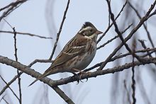
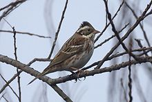

| Rustic Bunting | |
|---|---|
|  | |
| Conservation status | |
| Binomial name | |
| Emberiza rustica Pallas, 1776 |
| Rustic Bunting | |
|---|---|
|  | |
| Conservation status | |
| Binomial name | |
| Emberiza rustica Pallas, 1776 |
The Rustic Bunting, Emberiza rustica, is a passerine bird in the bunting family Emberizidae, a group now separated by most modern authors from the finches, Fringillidae.
It breeds across northern Europe and Asia. It is migratory, wintering in south east Asia, Japan, and eastern China. It is a rare wanderer to western Europe.
It breeds in wet coniferous woodland. 4-6 eggs are laid in a nest in a bush or on the ground. Its natural food consists of insects when feeding young, and otherwise seeds.
This bird is similar in size to a Reed Bunting. It has white underparts with reddish flank, pink legs and a pink lower mandible. The summer male has a black head with a white throat and supercilium and a reddish breast band.
The female has a heavily streaked brown back and brown face with a whitish supercilium. She resembles a female Reed Bunting, but has the reddish flank streaks, a chestnut nape and a pink, not grey, lower mandible.
The call is a distinctive zit, and the song is a melancholic delee-deloo-delee.

{kind=link}